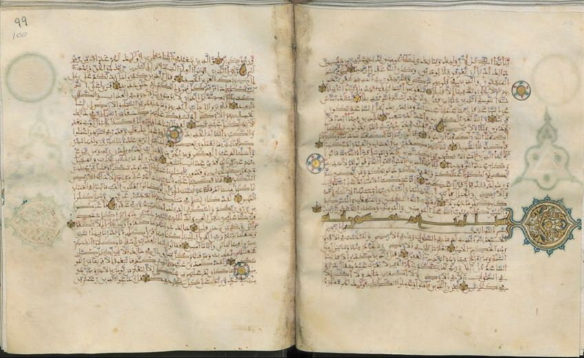

SurvivesCompleteness unknownNot digitised
- Rajab 565 AH
- Isle of Bute, Scotland, collection of the Marquess of Bute, ms. 359
- Ramadan 573 AH
- Kuwait, Tareq Rajab Museum; formerly in the Royal Library in Rabat, no. 12609
- Shaʿban 586 AH
- Istanbul, Istanbul University Library, A 6752
- Safar 591 AH
- Uppsala, University Library, O. Vet. 77
- Muharram 595 AH
- Médéa, Algeria, private collection; Bongianino could not trace it
- Safar 595 AH
- Timbuktu, library of the Kaʿti family: the second half of a Qur’an copied in Ceuta
- Muharram 596 AH
- Istanbul, Topkapı Palace, R. 36: copied in Valencia
- Dhu l-Qaʿda 598 AH
- Istanbul, Topkapı Palace, R. 31
- Dhu l-Hijja 598 AH
- Rabat, National Library, 934 J: at its end, counts of the verses, letters, words, dots and prostrations of the Qur’an, in Maghribi thuluth reserved on a blue ground
All nine of these Qur’ans are on Bongianino’s list of dated Maghribi Qur’ans, all are from the Almohad period, and most are small square Qur’ans. We have grouped them on one card because none of them names a copyist or an owner.
Dated, but the copyist of none of them is known, and the place of copying of most of them is unknown.
Close-ups of the script (2)Click to enlarge →

